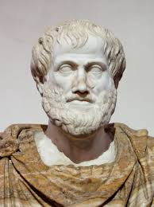

أرثور شوبنهاور
مجزوءة الوضع البشري
مفهوم الشخص
الشخص والهوية
تعتمد الهوية حسب أرثر شوبنهاور على الإرادة، حيث أن الإرادة هي تلك الآلةأوالقالب التي تبني الشخص، ومنها يستمد الشخص هويته.

أرسطو
مجزوءة السياسة
مفهوم الحق والعدالة
العدالة بين المساواة والإنصاف
حسب أرسطو، إن العادل هو الذي يتصرّف طبقاً لمبدأ الإنصاف وليس حسب القوانين، لأن القوانين لها وضع عام ولا تأخذ بعين الاعتبار تلك الحالات الخاصة.

ألبرت أينشتاين
مجزوءة المعرفة
مفهوم النظرية والتجربة
العقلانية العلمية
يرى ألبرت أينشتاين أن استخدام المنطق الرياضي يمكّننا من بناء نظريات علمية، أما التجربة فلها فقط دور إكمال النظريات التي ينتجها العقل.

ألكسندر كوجيف
مجزوءة الوضع البشري
مفهوم الغير
العلاقة مع الغير
يرى أليكساندر غوجيف أن العلاقة مع الغير ليست علاقة صداقة أو قائمة على مبدأ الشفقة، بل على الهيمنة، فالإنسان إما سيّد الغير أو عبده، ولا يخرج من هذه العلاقة لأجل نيل الاعتراف وفرض الهيمنة.

أوغست كونت
مجزوءة الوضع البشري
مفهوم الغير
العلاقة مع الغير
يرى أوغست كونت أن العلاقة مع الغير هي علاقة تكامل وغيْرية، حيث يقول إن كل شيء فينا ينتمي إلى الإنسانية، وكل شيء يعطينا الحياة والثروة والمعارف والموهبة. ولكن هذه العلاقة لا تأتي دون ثمن، بل تأتي مقابل كبح ميول الفرد الشخصية والأنانية.

إيمانويل كانط
مجزوءة الوضع البشري
مفهوم الشخص
الشخص بوصفه قيمة
يرى إيمانويل كانت أن الإنسان هو غايةٌ في حد ذاته وليس وسيلةً تستخدمها أي إرادة وفق هواها، حيث أن قيمته لا تكمن بما يملك وبميولاته.
مجزوءة المعرفة
مفهوم الحقيقة
الحقيقة بوصفها قيمة
يعتقد إيمانويل كانت أن الواجب هو أمر أخلاقي مطلق، لا مجال فيه لمراعاة الميول أو المصالح. ويُعتبر قول الحقيقة واجباً أخلاقياً مطلقاً مهما كانت الدوافع والنتائج والظروف، بتعريفه للحقيقة هو ضد الكذب

الحسن بن الهيثم
مجزوءة المعرفة
مفهوم النظرية والتجربة
معايير علمية النظريات العلمية
حسب الحسن ابن الهيثم، استخدام الأسلوب النقدي مهم عند النظر إلى النظريات العلمية والتفكر حولها، وذلك في كتابه "الشكوك على بطلميوس".

باروخ سبينوزا
مجزوءة الوضع البشري
مفهوم الشخص
الشخص بين الضرورة والحرية
رى باروخ سبينوزا أن الشخص خاضعٌ إلى ضروريات يتصرف وفقها وليس كائناً حراً، ويعطي مثلاً الحجر الذي يتحرك بواسطة قوة خارجية، غير أن الكيان الواعي يعتقد أن هذه مهمته وهو يفعلها بكل إرادة وحرية.
مجزوءة المعرفة
مفهوم الحقيقة
معايير الحقيقة
يرى باروخ سبينوزا أن من لديه فكرة صحيحة يعلم أنه لديه فكرة صحيحة، ولا يمكن أن يشك في صدق معرفته. فكون الفكرة موافقة لموضوعها يجعل الحقيقة معياراً لذاتها.
مجزوءة السياسة
مفهوم الدولة
مشروعية الدولة وغاياتها
يرى باروخ سبينوزا أن غاية الدولة هي تحرير الأفراد من الخوف لكي يعيش كل واحدٍ في أمانٍ قدر الإمكان، وأن يحتفظ بأكبر قدرٍ من حقوقه.
مفهوم الحق والعدالة
العدالة أساس الحق
حسب باروخ سبينوزا، فإن إقامة الحق والعدالة تقوم باتباع القوانين المتفق عليها، فلا حق خارج قوانين الدولة ومؤسساتها.

بليز باسكال
مجزوءة المعرفة
مفهوم الحقيقة
الرأي والحقيقة
رى بليز باسكال أن العقل والقلب لهما دور متبادل في تحديد الحقائق، بقوله: نحن نعرف الحقيقة ليس بواسطة العقل فقط، ولكن أيضاً بوساطة القلب.

بيير تويليي
مجزوءة المعرفة
مفهوم النظرية والتجربة
معايير علمية النظريات العلمية
يرى بيير تويليي أن من الصعب إخضاع النظرية للتجربة، وحتى عند إخضاع النظرية إلى التجربة، يستوجب ذلك إدخال نظريات وفَرَضيات لدعم التجربة. وهكذا يبقى الفكر له الدور الأكبر في بناء العلم.

توماس هوبز
مجزوءة السياسة
مفهوم الدولة
طبيعة السلطة السياسية
يرى توماس هوبز،أن الحاكم يجب أن يتمتع بسلطةٍ مطلقة، ولا يحق للأفراد معاقبته. فالإنسان ذئبٌ لأخيه الإنسان، ولا يمكن أن يعيش مع بعضهم البعض إلا بسلطة حاكمٍ جبّار
مفهوم الحق والعدالة
الحق بين الطبيعي والوضعي
فحسب توماس هوبز فإن أصل الحق هو أصل طبيعي، حيث إن الإنسان في الحالة الطبيعية—أي حرب الكل ضد الكل—يدافع عن حقوقه بقوّته، أي إن قوته هي التي تمنحه مدى الحقوق التي يتمتع بها.

جاكلين روس
مجزوءة السياسة
مفهوم الدولة
الدولة بين الحق والعنف
ترى جاكلين روسو أن الدولة ليست جوهراً يفرض نفسها على الجميع، بقدر ما هي ضرورة تجسّد البحث الدائم نحو تحقيق المصلحة المشتركة ومعقلنة السلطة.

جورج غوسدورف
مجزوءة الوضع البشري
مفهوم الشخص
الشخص بوصفه قيمة
يتطرق ,جورج غوسدورف إلى الشخص الأخلاقي، حيث أنه لا يوجد إلا بالمشاركة وقبول الوجود النسبي، والتخلي نهائياً عن الاكتفاء الوهمي.

جون بول سارتر
مجزوءة الوضع البشري
مفهوم الشخص
الشخص بين الضرورة والحرية
يُعرَفُ الإنسان بمشروعه، وحسب جون بول سارتر، فإن الإنسان يختار مشاريعه لتحسين وضعيته، وهو من يختار هذه الوضعية بإرادته.
مفهوم الغير
وجود الغير
جون بول سارتر يعترض اعتراضاً كلياً على أن وجود الغير له عامل إثبات وإغناء، بل إنه يرى أن الغير هو استيلابٌ كليّ لوجود الأنا وإمكانياته.
معرفة الغير
حسب جون بول سارتر، الأمر الذي يجعل هناك مسافة عدم بين الأنا والغير هو هذه العلاقة بينهما، حيث عندما يكون الإنسان لوحده يتصرف عكس ما يتصرف عندما يكون مراقباً من طرف الغير.

جون جاك روسو
مجزوءة السياسة
مفهوم الحق والعدالة
الحق بين الطبيعي والوضعي
يرى جون جاك روسو أن الإنسان خيّر بطبعه، وهو لا يلجأ إلى القوة لضمان حقوقه إلا بعد ظهور الملكية الخاصة، التي دفعت الأفراد إلى الصراع لحماية ممتلكاتهم، مما جعلهم ينتقلون إلى وضع قوانين وضعية والعيش في مجتمعات.

جون راولس
مجزوءة السياسة
مفهوم الحق والعدالة
العدالة بين المساواة والإنصاف
يعتقد جون راولس أن العدالة تقوم على تحقيق المساواة بين الأفراد في جميع الفرص المتاحة لتطوير قدراتهم ومواهبهم، ولكن ليس بالضرورة أن تكون النتائج متساوية.

جون لوك
مجزوءة الوضع البشري
مفهوم الشخص
الشخص والهوية
ترتبط هوية الشخص بالفكر الحسي حسب جون لوك وتبقى هوية الشخص ثابتة مادامت الذاكرة تحافظ على هذا الوعي الحسي.
مجزوءة السياسة
فهوم الدولة
طبيعة السلطة السياسية
يرى جون لوك أن السلطة يجب أن تكون بيد الأفراد. هم الذين يقررون من يمثلهم، ولهم القدرة على تغيير النظام الحاكم متى لمسوا إخلالاً به. فالسلطة تبدأ بيد الأفراد وتنتهي بيدهم، فهم واضعو السلطة والخاضعون لها.

روني طوم
مجزوءة المعرفة
مفهوم النظرية والتجربة
التجربة والتجريب
بحسب روني توم، إذا أردنا أن نصف الذين كان لهم دور في بناء التجربة العلمية، فسنضع الضفادع في المقام الأول.
إذن، حسب روني توم، عندما يضع شروط التجريب، فهو يحددها على النحو التالي: أولاً， عزل مجال التجربة. ثانياً， توفير الأدوات والمواد اللازمة. ثالثاً， إحداث خلل في المنظومة المدروسة لمعرفة الفرق. رابعاً， بناء تجربة قابلة للتكرار. وأخيراً， التأطير العقلي.

رونيه ديكارت
مجزوءة المعرفة
مفهوم الحقيقة
معايير الحقيقة
حسب رينيه ديكارت، أن الحقيقة تقوم على الحدس والاستنباط، والحدس هو ذلك التصور الصادر عن ذهن خالص ويقظ، أما الاستنباط فهو كل ما يتم استنتاجه بالضرورة من أشياء أخرى معلومة من قبل بنوع من اليقين.

غاستون باشلار
مجزوءة المعرفة
مفهوم الحقيقة
الرأي والحقيقة
حسب غاستون باشلار، يتعارض العلم والرأي، فبالنسبة له الرأي تفكير سيّئ، بل إن الرأي لا يفكر البتّة، فهو يترجم الحاجات إلى معارف ويعيّن الأشياء بحسب فائدتها.

فريدريش هيغل
مجزوءة السياسة
مفهوم الدولة
مشروعية الدولة وغاياتها
يرفض فريدريش هيغل التصوّرات التي تجعل للدولة غايةً خارج الدولة، فهو يرى أن الدولة أكثر من مجرد نظام حاكم، بل هي غاية في حد ذاتها. فالإجماع الذي يؤسس الدولة هو الغاية، ومصير الأفراد رهينٌ باجتماعهم.

فريدريك فون هايك
مجزوءة السياسة
مفهوم الحق والعدالة
العدالة أساس الحق
يرى فريدريك فون هايك أن إقامة العدالة هو التصرّف دون اقتراف أي فعل ظالم، أي إعطاء كل شخص ما يستحق ومنح كل فرد حقوقه، وهذا لا يعني أن الحكم العادل يصدره القانون.

كلود برنار
مجزوءة المعرفة
مفهوم النظرية والتجربة
التجربة والتجريب
باعتقاد كولد برنان، لا يمكنك أن تكون عالماً إلا إذا امتلكت عقلاً مفكراً يؤطر المعرفة العلمية نظرياً، ويداً ماهرةً تطبق ذلك عملياً. وهو يرى مراحل التجربة على النحو التالي: أولاً الملاحظة， ثانياً الفرضية， ثالثاً التجربة， وأخيراً الاستنتاج. ومثاله الشهير هو تجربة الأرانب.

مارتن هايدغر
مجزوءة الوضع البشري
مفهوم الغير
وجود الغير
وجود الغير، حسب مارتن هايدغر، يفرض على الأنا وجوداً مشتركاً، حيث إنه يذيب الوجود الفردي في نمط وجود الغير.

ماكس فيبر
مجزوءة السياسة
مفهوم الدولة
الدولة بين الحق والعنف
حسب ماكس فيبر، العنف هو الوسيلة الوحيدة والملازمة للدولة، حيث إن الدولة لا تملك أي وسيلة أخرى غير العنف لتطبيق القانون.

موريس ميرلوبونتي
مجزوءة الوضع البشري
مفهوم الغير
معرفة الغير
يدافع موريس ميرلو-بونتي عن أطروحة مفادها أن معرفة الغير ممكنة عبر التواصل معه والانفتاح عليه وكسر الحواجز التي تمنعنا من معرفة بعضنا البعض وتجعلنا نرى الغير كموضوع.

هانز ريشنباخ
مجزوءة المعرفة
مفهوم النظرية والتجربة
العقلانية العلمية
الفلسفة بعتقادهانز ريشنباخ هي منطق تأسس على التفكير العقلاني، أما العلم فقد استوجب التحقّق التجريبي واكتشاف أشياء جديدة، وفي العلم استوجبت العودة إلى العقلانية.

وليام جيمس
مجزوءة المعرفة
مفهوم الحقيقة
الحقيقة بوصفها قيمة
يدافع وليام جيمس عن أطروحة مفادها أن الحقيقة ليست صفةً تحملها الأفكار في ذاتها، أي أن الفكرة لا تحمل قيمةً في ذاتها، بل تستمد قيمتها من تحققها في الواقع، وتُستنبط قيمتها من انعكاسها على حياة الفرد اليومية.